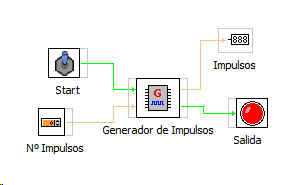

GENERADOR DE IMPULSOS
Este bloque genera un número determiando de impulsos que se le indicarán en su entrada Nº de Impulsos. La generación comienza cuando se activa la entrada Iniciar.
Las salidas del bloque son el valor numérico de Impulsos y salida_impulsos que es por donde se generan los impulsos.
Montaje básico.
